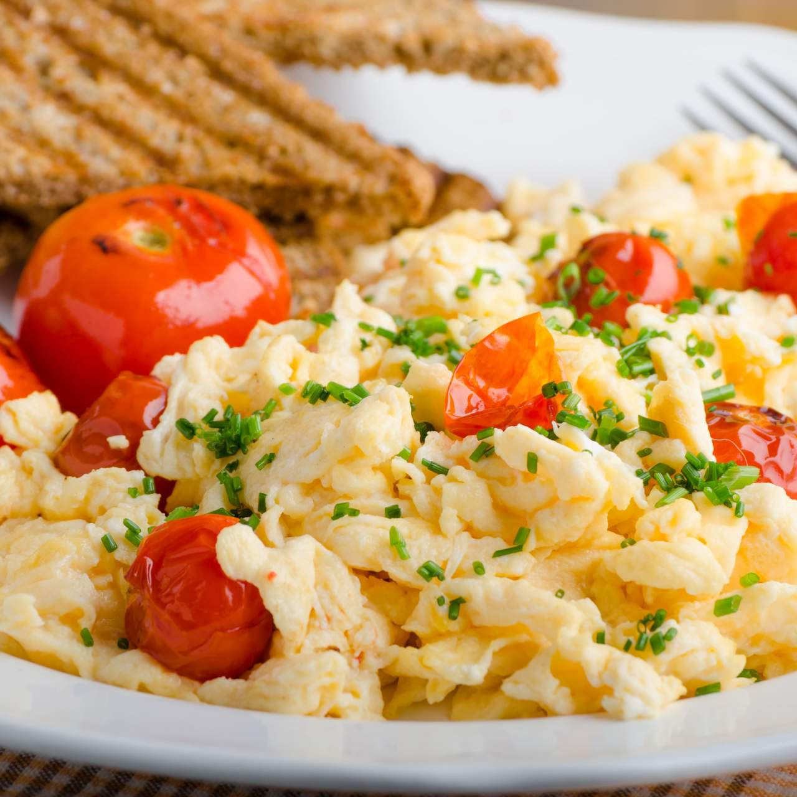

Home
Scrambled Eggs

Description
Cooking isn't about always doing the right thing, and this summer scramble is a perfect example. Adding juicy, sweet cherry tomatoes to a scramble tastes great, but it's not a common practice since having a pool of liquid under your eggs is considered bad form. I don't care; I have toast. Try to find a goat milk feta cheese for this; it's awesome!
Ingredients
- 3 large eggs
- 1 pinch of red pepper flakes
- 9 cherry tomatoes, halved
- 2 tablespoons of crumbled feta cheese
- 1 tablespoon of very thinly sliced fresh basil leaves
- Olive oil
- 1 pinch of sea salt
Steps
- Beat eggs and red pepper flakes together in a bowl. Stir tomatoes, feta, and basil leaves into egg mixture
- Heat olive oil in a non-stick skillet over high heat until oil starts to shimmer. Pour egg mixture into hot oil and cook, without stirring, for 5 seconds
- Cook and stir egg mixture until eggs are scrambled and softly set, about 30 seconds. Transfer eggs to a plate and sprinkle with sea salt